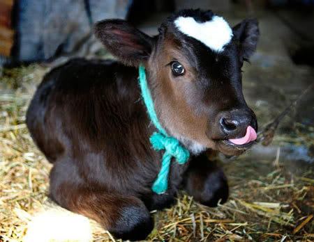
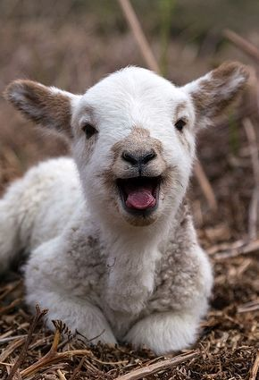
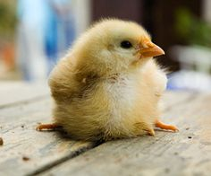
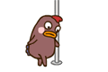

What is Veg It Out?
This a unique website offering information, resources and advice about going vegetarian. Our mission is reduce the amount of meat consumption and save our environment. So stand up against animal cruelty and start your journey with us!
Why Veg It Out?
There are many reasons to become a vegetarian but, here are the top ten.
- Reduce the risk of heart disease
- Cancer prevention
- Loss of excess weight and keep it off
- Live longer and slows the aging process
- Avoid toxic food contaminants
- Reduce global warming
- Help end world hunger
- Conservation of water
- Saving our forests and land
- Conservation of fossil fuel




Articles/Organizations
The Vegetarian Resource Group: A great resource for new vegetarians or people considering vegetarianism looking for information, advice, events and recipes.
"Becoming a Vegetarian", Harvard Health
News about Vegetarianism, NY Times
Find Us At...
Allison Sugabo instagram: @yeeitsalli
Taylor Jones instagram: @taylor.soleil
